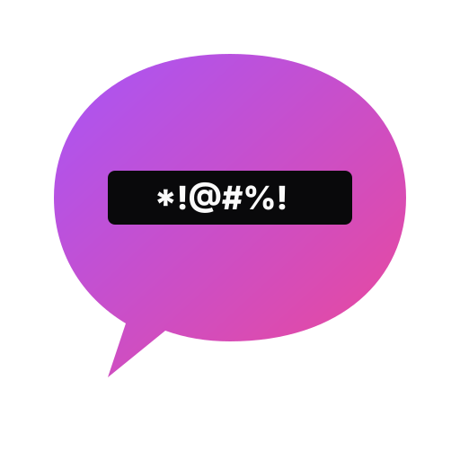
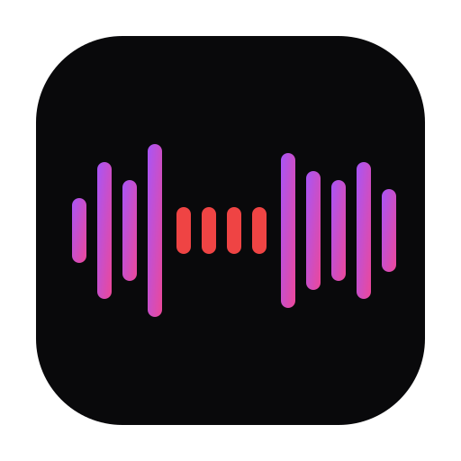
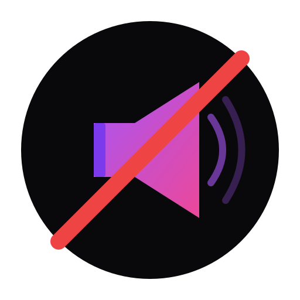
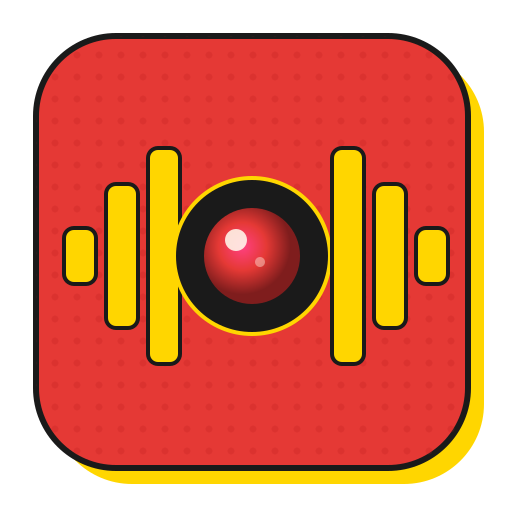

A skill for Claude Code
Logo Designer Skill
Turn a conversation into an editable SVG logo. Explore distinct directions, refine your favorite, and export it for your app.
View on GitHub ↗One app. Different directions.
Made with the skill for Bleep That Sh*t!



git clone https://github.com/neonwatty/logo-designer-skill.git
claude --plugin-dir ./logo-designer-skillThen ask: “Design a logo for my app.”
Optional next step · Lineage Logo
Like your logo?
Fine-tune the details.
No need to regenerate your entire logo for small changes. Fine-tune shape, size, color, and spacing - by hand or with your agent.
Try Lineage Logo, a shared editor for humans and agents ↗